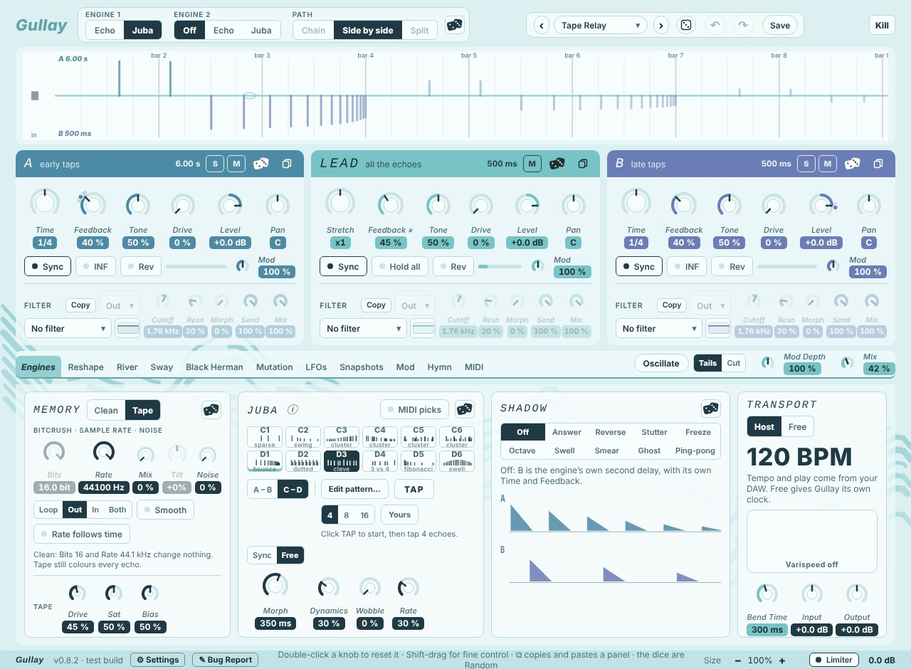
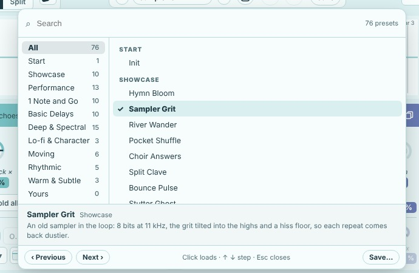
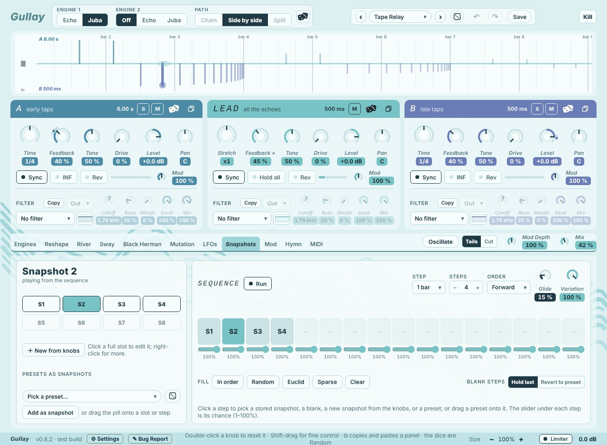
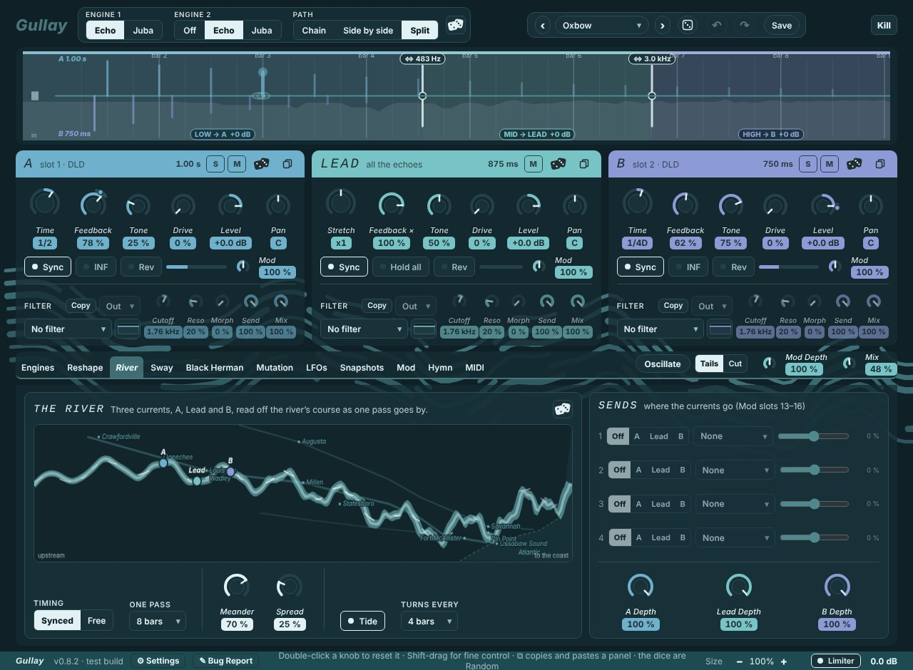
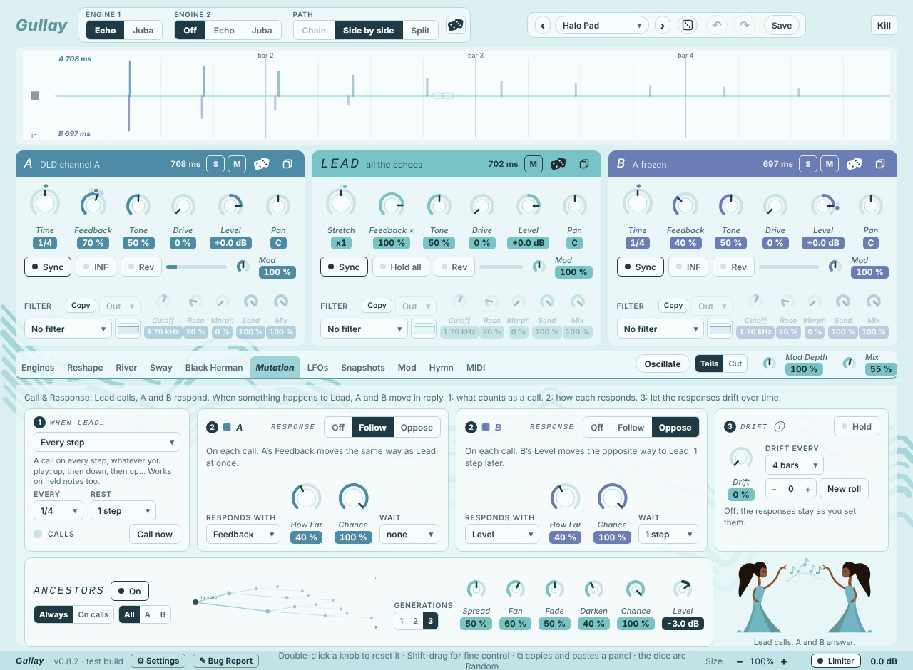
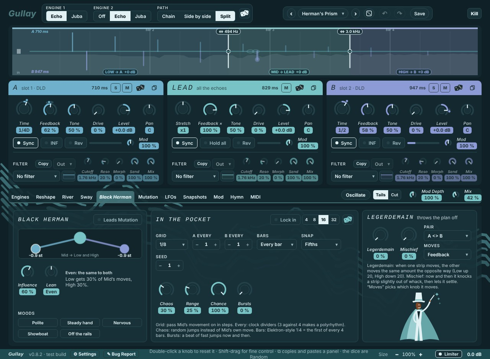
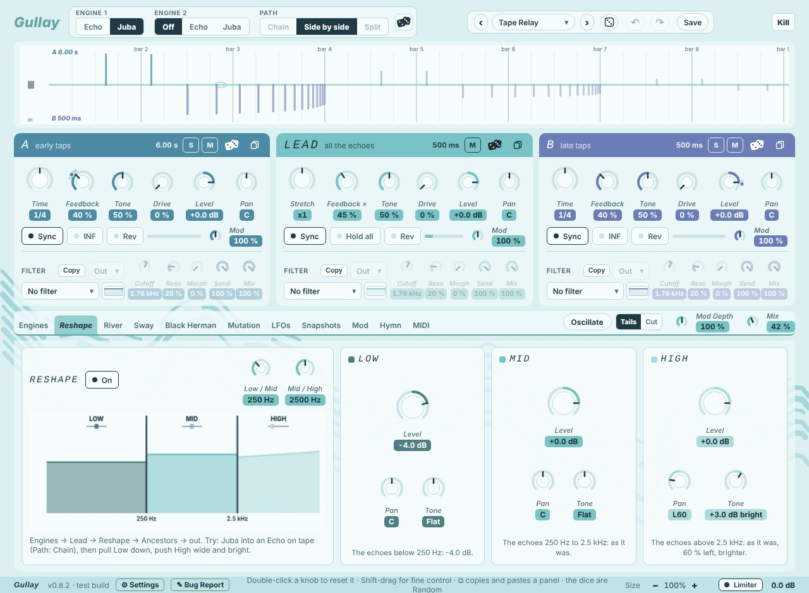

A delay that keeps moving. Two engines, three parts, and echoes that answer back.
Free and open source (GPL v3). Version 0.8.2 is a test build, so please tell us what you hear.

Gullay draws its history from Black American culture, mostly the Gullah Geechee people of the Georgia and Carolina coast, along with Hoodoo. You can hear it in the names.
Echoes are voices that come back. Gullay keeps them talking.
Two engines: Echo, from the 4ms Dual Looping Delay, and Juba, from the 4ms Tapographic Delay. A and B are the two delays, and Lead stretches and colours every echo. Around them are pages that keep the sound moving.





